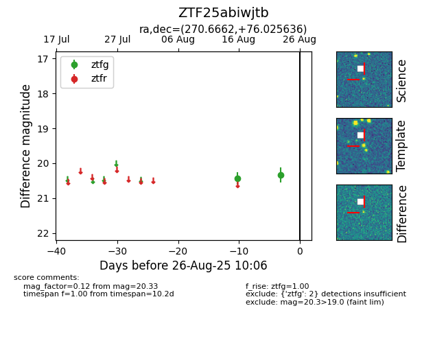

Target ZTF25abiwjtb at 2025-08-26 10:06, see:
FINK: fink-portal.org/ZTF25abiwjtb
Lasair: lasair-ztf.lsst.ac.uk/objects/ZTF25abiwjtb
ALeRCE: alerce.online/object/ZTF25abiwjtb
alt names
ZTF25abiwjtb (ztf,fink)
coordinates:
equatorial (ra, dec) = (270.6662,+76.02564)
galactic (l, b) = (107.2435,+29.20147)
photometry
last ztfg=20.33
2 ztfg detections
